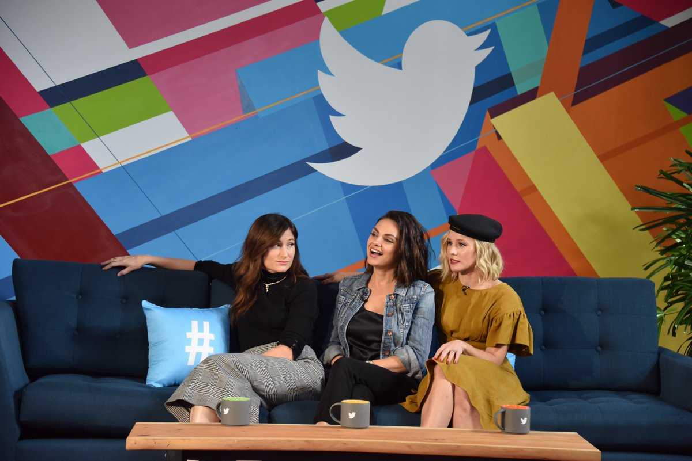
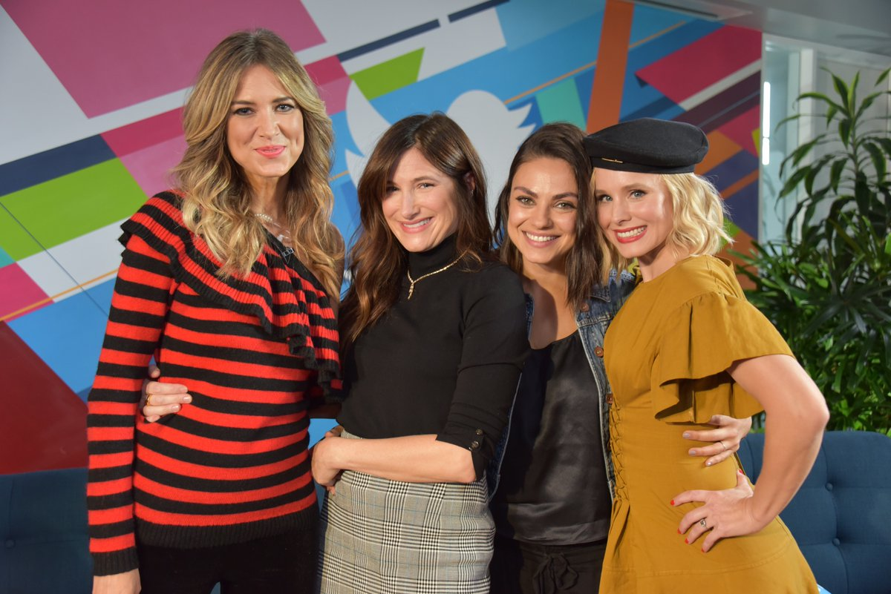
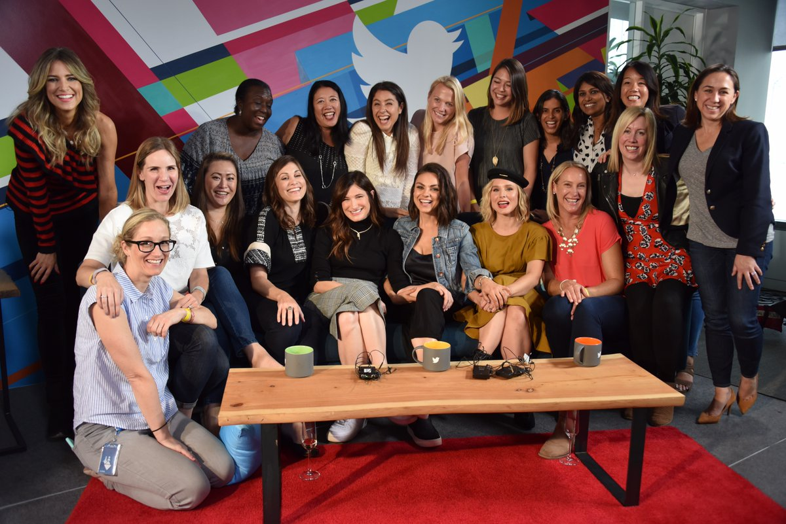

Twitterಪರಿಶೀಲಿಸಿದ ಖಾತೆ
Your official source for what’s happening. Need a hand? Visit https://support.twitter.com
ಟ್ವೀಟ್ಗಳು
- ಟ್ವೀಟ್ಗಳು, ಪ್ರಸ್ತುತ ಪುಟ.
- ಟ್ವೀಟ್ಗಳು & ಪ್ರತಿಕ್ರಿಯೆಗಳು
- ಮಾಧ್ಯಮ
ನೀವು @Twitter ಅವರನ್ನು ತಡೆಹಿಡಿದಿರುವಿರಿ
ಈ ಟ್ವೀಟ್ಗಳನ್ನು ವೀಕ್ಷಿಸಲು ನೀವು ಖಚಿತವಾಗಿ ಬಯಸುವಿರಾ? ಟ್ವೀಟ್ ವೀಕ್ಷಣೆಯು @Twitter ಅವರ ತಡೆತೆರವುಗೊಳಿಸುವುದಿಲ್ಲ
-
Twitter ಅವರು ಮರುಟ್ವೀಟಿಸಿದ್ದಾರೆ
See how the Twitter conversation went during the
#WorldSerieshttps://cards.twitter.com/cards/4yugom/4z406 …ಧನ್ಯವಾದಗಳು. Twitter ಇದನ್ನು ನಿಮ್ಮ ಕಾಲರೇಖೆಯನ್ನು ಉತ್ತಮಗೊಳಿಸಲು ಬಳಸುತ್ತದೆ. ರದ್ದುಗೊಳಿಸು -
Twitter ಅವರು ಮರುಟ್ವೀಟಿಸಿದ್ದಾರೆ
Catch these streams and many more, all on
@TwitterLive.pic.twitter.com/rxVfLTmGmxಧನ್ಯವಾದಗಳು. Twitter ಇದನ್ನು ನಿಮ್ಮ ಕಾಲರೇಖೆಯನ್ನು ಉತ್ತಮಗೊಳಿಸಲು ಬಳಸುತ್ತದೆ. ರದ್ದುಗೊಳಿಸು -
Twitter ಅವರು ಮರುಟ್ವೀಟಿಸಿದ್ದಾರೆ
Watch live coverage of NYC truck attack via
@ABChttps://twitter.com/i/events/925470975382077440 …ಧನ್ಯವಾದಗಳು. Twitter ಇದನ್ನು ನಿಮ್ಮ ಕಾಲರೇಖೆಯನ್ನು ಉತ್ತಮಗೊಳಿಸಲು ಬಳಸುತ್ತದೆ. ರದ್ದುಗೊಳಿಸು -
ಧನ್ಯವಾದಗಳು. Twitter ಇದನ್ನು ನಿಮ್ಮ ಕಾಲರೇಖೆಯನ್ನು ಉತ್ತಮಗೊಳಿಸಲು ಬಳಸುತ್ತದೆ. ರದ್ದುಗೊಳಿಸು
-
Twitter ಅವರು ಮರುಟ್ವೀಟಿಸಿದ್ದಾರೆ
My
#HallowKKWeen transformation into@cher last night!https://twitter.com/i/moments/924371743992512513 …ಧನ್ಯವಾದಗಳು. Twitter ಇದನ್ನು ನಿಮ್ಮ ಕಾಲರೇಖೆಯನ್ನು ಉತ್ತಮಗೊಳಿಸಲು ಬಳಸುತ್ತದೆ. ರದ್ದುಗೊಳಿಸು -
Twitter ಅವರು ಮರುಟ್ವೀಟಿಸಿದ್ದಾರೆಧನ್ಯವಾದಗಳು. Twitter ಇದನ್ನು ನಿಮ್ಮ ಕಾಲರೇಖೆಯನ್ನು ಉತ್ತಮಗೊಳಿಸಲು ಬಳಸುತ್ತದೆ. ರದ್ದುಗೊಳಿಸು
-
Twitter ಅವರು ಮರುಟ್ವೀಟಿಸಿದ್ದಾರೆಧನ್ಯವಾದಗಳು. Twitter ಇದನ್ನು ನಿಮ್ಮ ಕಾಲರೇಖೆಯನ್ನು ಉತ್ತಮಗೊಳಿಸಲು ಬಳಸುತ್ತದೆ. ರದ್ದುಗೊಳಿಸು
-
Twitter ಅವರು ಮರುಟ್ವೀಟಿಸಿದ್ದಾರೆ
The upside down never felt so right. See what people are saying about
#StrangerThings & join the conversation.pic.twitter.com/0HeCnPx5xRಧನ್ಯವಾದಗಳು. Twitter ಇದನ್ನು ನಿಮ್ಮ ಕಾಲರೇಖೆಯನ್ನು ಉತ್ತಮಗೊಳಿಸಲು ಬಳಸುತ್ತದೆ. ರದ್ದುಗೊಳಿಸು -
Twitter ಅವರು ಮರುಟ್ವೀಟಿಸಿದ್ದಾರೆ
#MeToo campaign by@Alyssa_Milano has become#YoTambien,#QuellaVoltaChe,#BalanceTonPorc and#MoiAussi globally.https://twitter.com/i/moments/923142433596157953 …ಧನ್ಯವಾದಗಳು. Twitter ಇದನ್ನು ನಿಮ್ಮ ಕಾಲರೇಖೆಯನ್ನು ಉತ್ತಮಗೊಳಿಸಲು ಬಳಸುತ್ತದೆ. ರದ್ದುಗೊಳಿಸು -
Twitter ಅವರು ಮರುಟ್ವೀಟಿಸಿದ್ದಾರೆ
Happy Birthday to Twitter’s firework,
@katyperry.pic.twitter.com/6MOc12E0Nsಧನ್ಯವಾದಗಳು. Twitter ಇದನ್ನು ನಿಮ್ಮ ಕಾಲರೇಖೆಯನ್ನು ಉತ್ತಮಗೊಳಿಸಲು ಬಳಸುತ್ತದೆ. ರದ್ದುಗೊಳಿಸು -
Twitter ಅವರು ಮರುಟ್ವೀಟಿಸಿದ್ದಾರೆ
Let’s go LIVE. Don’t miss these streams and more, all on
@TwitterLive.pic.twitter.com/UnuN8UU8o4ಧನ್ಯವಾದಗಳು. Twitter ಇದನ್ನು ನಿಮ್ಮ ಕಾಲರೇಖೆಯನ್ನು ಉತ್ತಮಗೊಳಿಸಲು ಬಳಸುತ್ತದೆ. ರದ್ದುಗೊಳಿಸು -
Twitter ಅವರು ಮರುಟ್ವೀಟಿಸಿದ್ದಾರೆ
1.7 million people from 85 countries and counting...it’s more than a moment it’s a movement.
#metooಧನ್ಯವಾದಗಳು. Twitter ಇದನ್ನು ನಿಮ್ಮ ಕಾಲರೇಖೆಯನ್ನು ಉತ್ತಮಗೊಳಿಸಲು ಬಳಸುತ್ತದೆ. ರದ್ದುಗೊಳಿಸು -
Twitter ಅವರು ಮರುಟ್ವೀಟಿಸಿದ್ದಾರೆ
One tweet has brought together 1.7 million voices from 85 countries. Standing side by side, together, our movement will only grow.
#MeTooಧನ್ಯವಾದಗಳು. Twitter ಇದನ್ನು ನಿಮ್ಮ ಕಾಲರೇಖೆಯನ್ನು ಉತ್ತಮಗೊಳಿಸಲು ಬಳಸುತ್ತದೆ. ರದ್ದುಗೊಳಿಸು -
Twitter ಅವರು ಮರುಟ್ವೀಟಿಸಿದ್ದಾರೆ
The
#ArianaGrandeChallenge stool the show. Twitter investigates@ArianaGrande’s balance. https://twitter.com/i/moments/919939024244105217 …ಧನ್ಯವಾದಗಳು. Twitter ಇದನ್ನು ನಿಮ್ಮ ಕಾಲರೇಖೆಯನ್ನು ಉತ್ತಮಗೊಳಿಸಲು ಬಳಸುತ್ತದೆ. ರದ್ದುಗೊಳಿಸು -
Twitter ಅವರು ಮರುಟ್ವೀಟಿಸಿದ್ದಾರೆಧನ್ಯವಾದಗಳು. Twitter ಇದನ್ನು ನಿಮ್ಮ ಕಾಲರೇಖೆಯನ್ನು ಉತ್ತಮಗೊಳಿಸಲು ಬಳಸುತ್ತದೆ. ರದ್ದುಗೊಳಿಸು
-
Twitter ಅವರು ಮರುಟ್ವೀಟಿಸಿದ್ದಾರೆ
From Tweets to a collab.https://twitter.com/halsey/status/920788379503120385 …
ಧನ್ಯವಾದಗಳು. Twitter ಇದನ್ನು ನಿಮ್ಮ ಕಾಲರೇಖೆಯನ್ನು ಉತ್ತಮಗೊಳಿಸಲು ಬಳಸುತ್ತದೆ. ರದ್ದುಗೊಳಿಸು -
Twitter ಅವರು ಮರುಟ್ವೀಟಿಸಿದ್ದಾರೆ
See what’s happening LIVE. Check out the hottest streams happening this week on Twitter. Stay tuned to
@TwitterLive for the latest.pic.twitter.com/Iij1SJuhV4ಧನ್ಯವಾದಗಳು. Twitter ಇದನ್ನು ನಿಮ್ಮ ಕಾಲರೇಖೆಯನ್ನು ಉತ್ತಮಗೊಳಿಸಲು ಬಳಸುತ್ತದೆ. ರದ್ದುಗೊಳಿಸು -
Twitter ಅವರು ಮರುಟ್ವೀಟಿಸಿದ್ದಾರೆ
Five days of Deepavali celebrations begin today! This year, Tweet a rangoli emoji every time you wish someone
#HappyDiwali, so join in!pic.twitter.com/E0XShmuwfpಧನ್ಯವಾದಗಳು. Twitter ಇದನ್ನು ನಿಮ್ಮ ಕಾಲರೇಖೆಯನ್ನು ಉತ್ತಮಗೊಳಿಸಲು ಬಳಸುತ್ತದೆ. ರದ್ದುಗೊಳಿಸು -
Twitter ಅವರು ಮರುಟ್ವೀಟಿಸಿದ್ದಾರೆ
Thank you to the cast of
@BadMoms for stopping by@Twitter and keeping it real with us Twitter Moms! You are an inspiration and our tribe!#badmomsxmaspic.twitter.com/0p6GwxdGvY


ಧನ್ಯವಾದಗಳು. Twitter ಇದನ್ನು ನಿಮ್ಮ ಕಾಲರೇಖೆಯನ್ನು ಉತ್ತಮಗೊಳಿಸಲು ಬಳಸುತ್ತದೆ. ರದ್ದುಗೊಳಿಸು
ಲೋಡಿಂಗ್ ಸಮಯ ಸ್ವಲ್ಪ ತೆಗೆದುಕೊಳ್ಳುತ್ತಿರುವಂತೆನಿಸುತ್ತದೆ.
Twitter ಸಾಮರ್ಥ್ಯ ಮೀರಿರಬಹುದು ಅಥವಾ ಕ್ಷಣಿಕವಾದ ತೊಂದರೆಯನ್ನು ಅನುಭವಿಸುತ್ತಿರಬಹುದು. ಮತ್ತೆ ಪ್ರಯತ್ನಿಸಿ ಅಥವಾ ಹೆಚ್ಚಿನ ಮಾಹಿತಿಗೆ Twitter ಸ್ಥಿತಿಗೆ ಭೇಟಿ ನೀಡಿ.